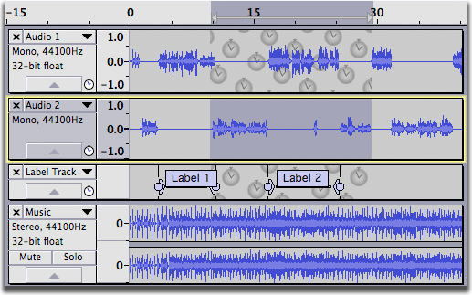
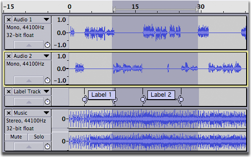
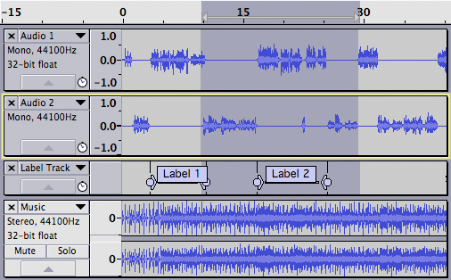

Edit Menu: Select
From Audacity Manual
Left at Playback Position followed by Right at Playback Position (or their shortcuts) are a time saving way to mark the start point then the end point of a selection heard while playing or recording.
All CTRL + A
Selects all of the audio in all of the tracks.
None CTRL + SHIFT + A
Deselects all of the audio in all of the tracks.
Spectral
The Spectral submenu lets you select or deselect spectral selections.
Toggle spectral selection Q
Changes between selecting a time range (and hence all the frequencies in that range) and selecting the last selected spectral selection in that time range. This command toggles the spectral selection even if not in one of the spectrogram views.
Next Higher Peak Frequency
When in either of the spectrogram views, snaps the center frequency to the next higher frequency peak, moving the spectral selection upwards. This does the same as clicking and dragging the center frequency upwards.
Next Lower Peak Frequency
When in either of the spectrogram views, snaps the center frequency to the next lower frequency peak, moving the spectral selection downwards. This does the same as clicking and dragging the center frequency downwards.
Left at Playback Position [
When playing or recording: Sets the left boundary of a potential selection by moving the cursor to the current position of the green playback cursor (or red recording cursor). The selection can then be drawn by using "Right at Playback Position" (below).
When there is no audio playing or recording: Opens the "Set Left Selection Boundary" dialog. This is useful for keyboard users or for time-exact manipulation of the selection instead of using Selection Toolbar. Move the selection boundary dialog's time digits backwards to create a selection leftwards from the cursor position or to extend the current selection leftwards. Move the time digits forwards to move the cursor forwards to an exact point or to contract the current selection from the left. See "Creating selections at an exact time" for more details.
Right at Playback Position ]
When playing or recording: Sets the right boundary of the selection, thus drawing the selection from the cursor position to the current position of the green playback cursor (or red recording cursor). This is a quick way to mark a selection for future editing while playing or recording. Selections can be labeled while playing or recording using or shortcut CTRL + B.
When there is no audio playing or recording: Opens the "Set Right Selection Boundary" dialog. Move the dialog's time digits forwards to create a selection rightwards from the cursor position or to extend the current selection rightwards. Move the time digits backwards to move the cursor backwards to an exact point or to contract the current selection from the right.
Track Start to Cursor SHIFT + J
Selects a region in the selected track(s) from the start of the track to the cursor position (or extends the current selection so that it starts from the start of the track).
Cursor to Track End SHIFT + K
Selects a region in the selected track(s) from the cursor position to the end of the track (or extends the current selection so that it ends at the end of the track).
In All Tracks CTRL + SHIFT + K
Extends the current selection up and/or down into all tracks in the project.
- 
- 
In All Sync-Locked Tracks CTRL + SHIFT + Y
Extends the current selection up and/or down into all sync-locked tracks in the currently selected track group.
- 